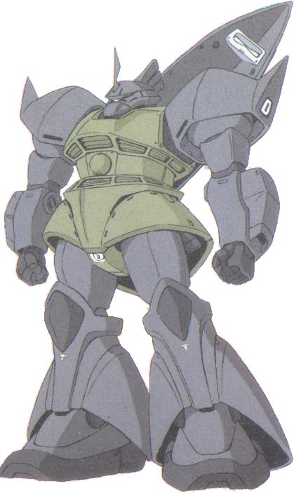

| MS-14 Gelgoog General Use Superiority Zeon Duchy Mobile Suit |
|
|  | |
General and Technical Data |
|
|
Model number: MS-14 Code name: Gelgoog Unit type: mass production high efficiency space-use mobile suit Operator: Zeon Duchy Dimensions: head height 19.2 meters Weight: empty 41.2 metric tons; max gross 73.3 metric tons Construction: Titanium/Ceramic composite Powerplant: Minovsky type ultracompact fusion reactor, output rated at 1440 kW Propulsion: rocket thrusters: 3 x 24500 kg,6 x 2500 kg Performance: thruster acceleration 0.84 G; maximum ground running speed 180 km/h; 180-degree turn time 1.5 seconds Equipment and design features: sensors, range 6300 meters Fixed armaments: none Optional hand armaments: beam rifle, powered by rechargeable energy cap; large shield, can be optionally stored on back; twin beam sword, stored in recharge rack on back/waist; beam machinegun, powered by rechargeable energy cap Magnetic Storage Racks: 3, primary rack on backpack, one additional rack on either hip |
|
| Technical and Historical Notes | |
|
The latest war-time Zeon mobile suit series, the Gelgoog is a beast of a machine. It is the first mass-production mobile suit equipped with a beam rifle as a standard armament, as well as the first universal hand-plug system.
The Gelgoog is the Zeon's firm and deadly response to mass-produced RGM-79 GMs employed by the Federation. It is extremely fast and maneuverable, and arms a number of powerful weapons. Due to its ingenious universal hand plug, it can use virtually any Zeon or Federal weapon. Its standard armament includes a powerful and highly accurate beam rifle, more or less the same as the RX-78 Gundam's, a beam saber, and a large shield, capable of covering its entire body. Two verniers equipped in the Gelgoogs forearms can be removed for heavy 110mm machineguns for ground combat. The Gelgoog is extremely mobile, powered by nine (seventeen in the case of the High Mobility Variant) large thrusters. Numerous apogee motors and other jets stipple its body, giving it unprecedented maneuvering ability. It is also decently well armored, though still not quite as tough as the Lunar-titanium equipped Gundam. The Gelgoog is also very customizeable, being able to quickly switch between a standard armament, a fuel-guzzling high mobility variant, or an anti-battleship cannon variant. A removable backpack is the only exchanged feature.
The Gelgoog's main weakness is not a design flaw, but rather its extremely high operating cost. Gelgoogs are high maintainence machines that use large amounts of fuel extremely quickly, and it remains unclear whether or not the Zeon will be able to continue their usage with their dwindling resources.
|
 RPG quick stats sheet
RPG quick stats sheet | Weapons and Features | |
|
|
|